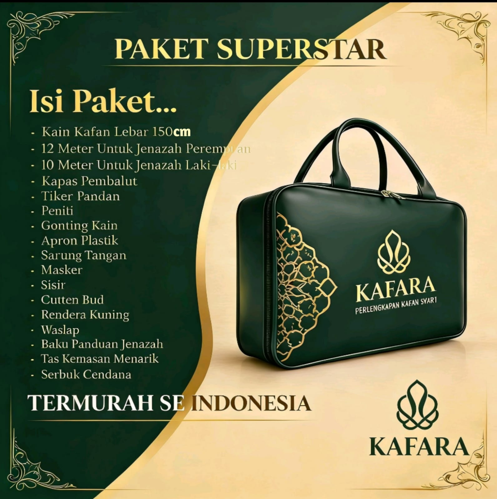
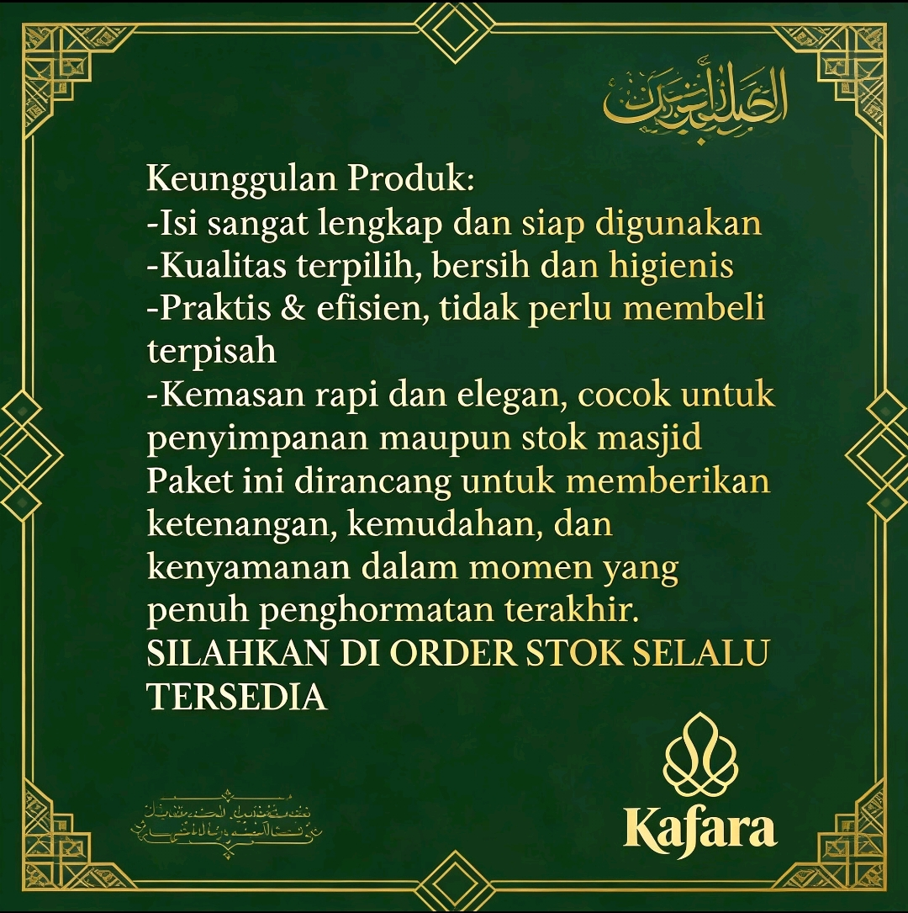
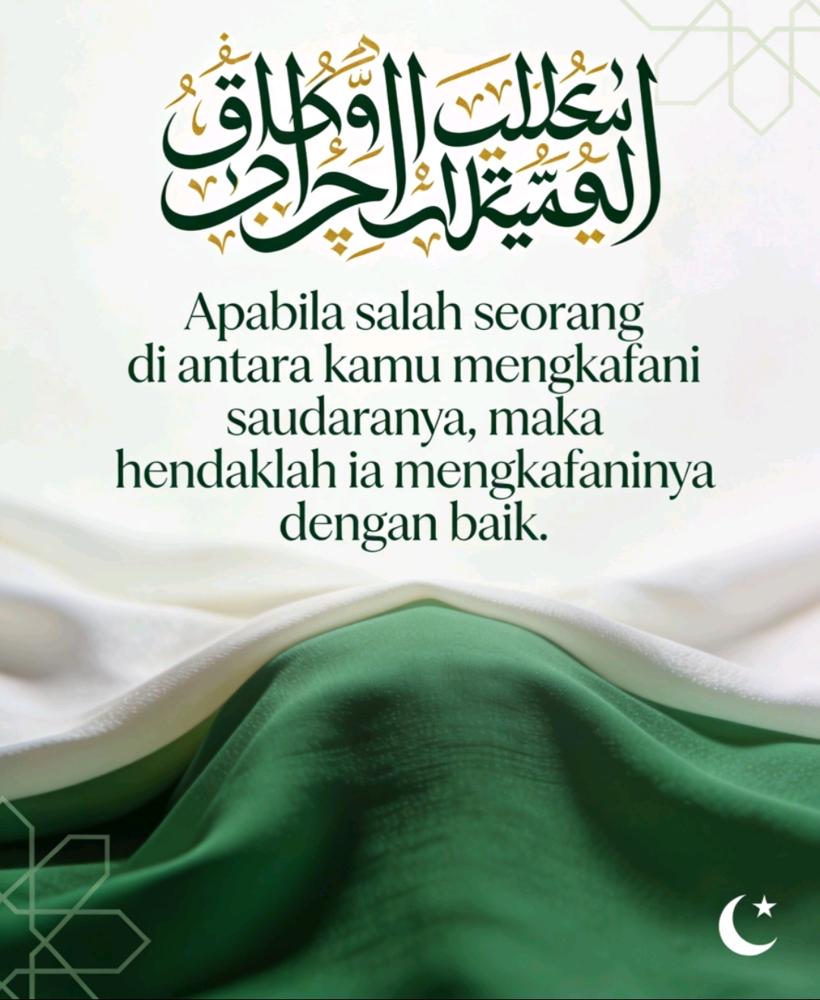
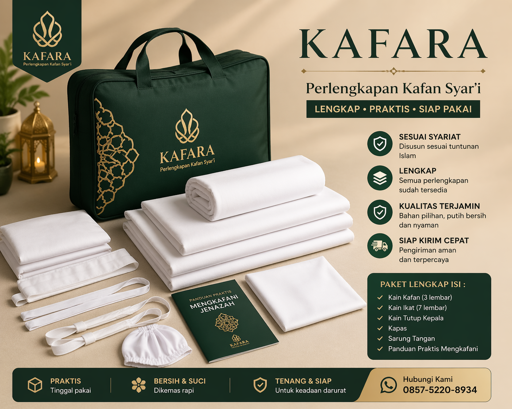

Produk KAFARA




KAFARA menyediakan paket kain kafan lengkap dan perlengkapan jenazah siap pakai sesuai syariat Islam. Produk ini dirancang untuk kebutuhan fardhu kifayah di masjid maupun keluarga muslim.

👉 Pesan Sekarang


Paket sudah disusun lengkap untuk kebutuhan pemulasaraan jenazah secara praktis dan higienis.
✔ Kain kafan 10–12 meter
✔ Kapas pembalut
✔ Tikar pandan
✔ Sabun & shampo
✔ Kapur barus & parfum
✔ Sarung tangan & masker
✔ Gunting & peniti
✔ Buku panduan jenazah
✔ Tas eksklusif
Kain kafan adalah kain untuk membungkus jenazah sesuai syariat Islam.
Meliputi kain kafan, kapas, dan perlengkapan pembersihan jenazah.
Karena kematian datang tanpa pemberitahuan.
Produk ini memiliki pasar stabil di masjid dan komunitas muslim.
Kewajiban umat Islam dalam mengurus jenazah secara kolektif.
👉 Konsultasi